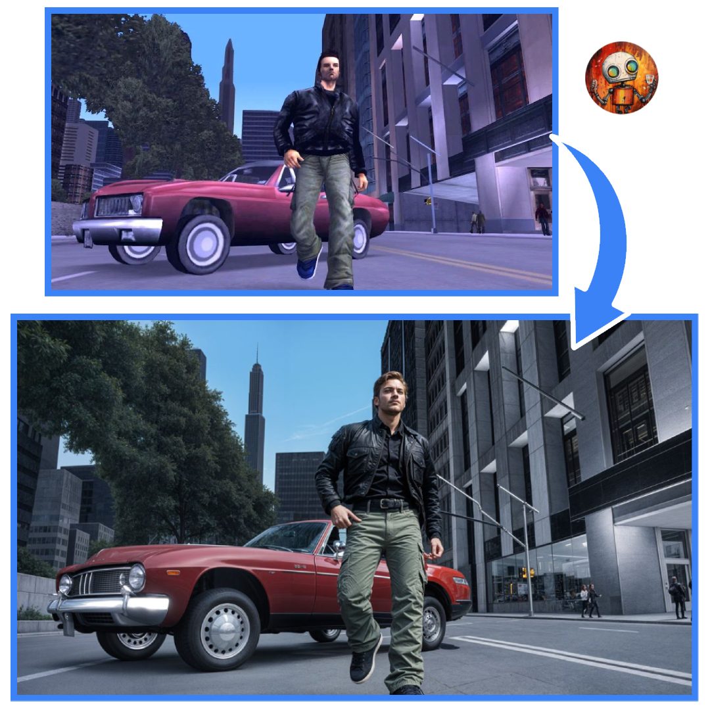

С помощью креативного апскейлера от Генерач вы можете не только увеличить разрешение изображения, но и добавить уникальные детали, которые придают вашим фото новое качество. Этот инструмент не просто улучшает картинку — он позволяет вам управлять уровнем детализации, создавая уникальные результаты с использованием передовых алгоритмов ИИ.

Креативный апскейлер от Генерач позволяет вам превратить обычные изображения в высокодетализированные произведения искусства. Этот инструмент использует продвинутые нейросети для добавления реалистичных деталей в изображение, увеличивая его разрешение и качество. Вы можете контролировать уровень добавляемых деталей с помощью удобной панели настроек.
Попробуйте креативный апскейлер с Генерач прямо сейчас и получите детализированные изображения высокого качества за несколько секунд!
Представьте, что у вас есть инструмент, который может превратить любые ваши идеи в потрясающие визуальные шедевры. Генерач - это именно такой инструмент. Он позволяет создавать уникальные изображения, иллюстрации и арт-проекты, используя лишь силу вашего воображения.
Присоединяйтесь к революции в области творчества с Генерач и раскройте свой творческий потенциал уже сегодня!